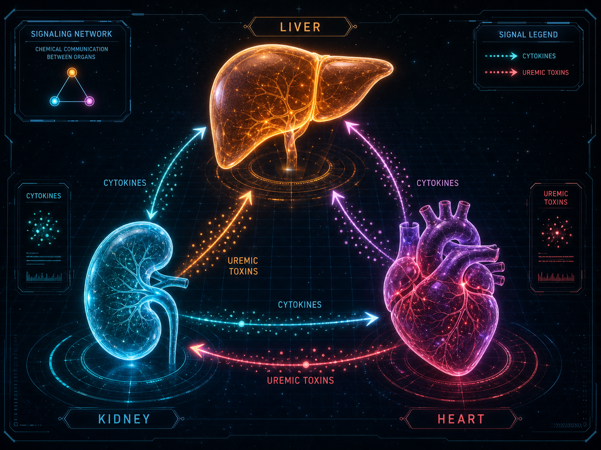
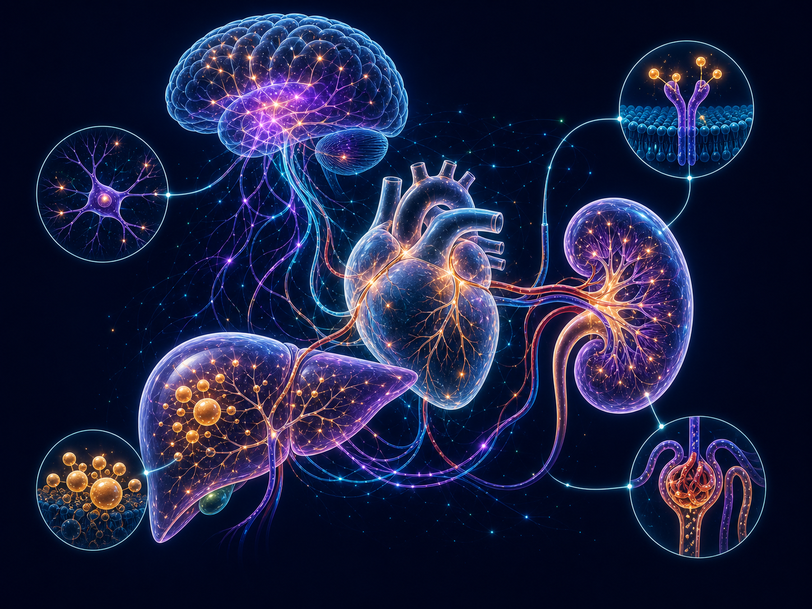

心血管代謝多重長期病患（cmMLTC）的前世、今生與未來
當代謝障礙不再只是「單一器官」的警訊，而是演變為席捲肝、腎、心血管的系統性風暴：臨床流行病學的思維典範轉移與全人照護革命。

在過去的診間，我們常看到這樣的病人：因為血糖控制不好掛新陳代謝科，因為蛋白尿與水腫去看腎臟科，又因為心悸或心臟衰竭在心臟科門診排隊。這種「一個病人、三個診間、十幾顆藥物」的現象，正是醫療碎片化（Care Fragmentation）的寫照。
然而，2026 年發表於《刺胳針》（The Lancet）的系列研究與最新臨床指南，為我們敲響了警鐘。現代流行病學已不再將這些疾病視為獨立的個體，而是正式定位為一個統合的實體：**心血管代謝多重長期病患（Cardiometabolic Multiple Long-term Conditions, cmMLTC）**，或稱**心腎代謝（Cardio-Kidney-Metabolic, CKM）症候群**。這不僅是一次學術名詞的更新，更是一場席捲預防醫學、計算生物學與全人醫療的典範革命。
一、前世：從還原論的「代謝症候群」到動態的「CKM 連續體」
回顧醫學史，我們對這類多重共病的認知經歷了三個主要階段：
- 單一疾病還原論時代：將糖尿病、高血壓、腎臟病視為毫無關聯的單一疾病，由各專科獨立開藥，病人因而游走於多科就診（Polydoctoring）。
- 代謝症候群時代（靜態因子群集）：學者發現肥胖、高血糖、高血壓、異常血脂常一起出現，因而提出「代謝症候群」（Metabolic Syndrome）概念，其核心驅動力為胰島素阻抗。然而，這個框架是靜態的，未把「慢性腎臟病」納入，也無法預測疾病惡化的時間先後順序。
- 心腎代謝（CKM）症候群時代（動態器官連續體）：美國心臟協會（AHA）正式確立 CKM 症候群。它將多器官受損重塑為一個從 0 期到 4 期的動態病理連續體（Multiorgan Continuum），強調在器官發生不可逆纖維化前，及早啟動具「疾病修飾（Disease-modifying）」潛力的跨器官保護治療。
| 分期 | 病理特徵 | 臨床表型 | 關鍵干預目標 |
|---|---|---|---|
| 第 0 期 | 無 CKM 風險因子 | 各項代謝與腎臟指標完全正常 | 一級預防、维持健康作息 |
| 第 1 期 | 功能障礙性脂肪堆積 | 超重/肥胖、空腹血糖異常（Prediabetes） | 調整生活型態、防止脂肪異位沉積 |
| 第 2 期 | 顯性代謝風險與腎臟損傷 | 第二型糖尿病、高血壓、中/高風險慢性腎臟病 | 嚴格控制三高、導入 SGLT2i 等心腎保護藥 |
| 第 3 期 | 亞臨床心血管病變 | 無症狀冠狀動脈鈣化、左心室肥大、極高風險腎臟病 | 強化藥物治療，預防顯性心血管事件 |
| 第 4 期 | 顯性心血管疾病 | 心臟衰竭、腦中風、心肌梗塞、心房顫動 | 跨學科全人照護、防範多重用藥衝突 |
二、今生：動態計算軌跡、肝臟「分子分群」與因果推論
在現代大數據與精準醫學的加持下，我們得以用微觀的「分子分群」與宏觀的「多狀態數學模型」來解剖 cmMLTC 的進程。
1. 生命歷程體型軌跡與疾病轉移概率
過去研究常使用 Cox 比例風險模型，但它無法動態預測病人「何時」會從一個病態進展到另一個病態。現代流行病學改用多狀態馬可夫模型（Multi-state Markov Models），精確量化個體從「健康 → 首發慢性病（FCMD） → 多重共病（CMM） → 死亡」的動態移轉機率。
一項追蹤歐亞三大前瞻性世代（UK Biobank, SHARE, KLoSA）逾 41 萬人的縱向研究揭示：生命歷程中的體型發育軌跡，決定了你晚年的疾病路徑。
2. 脂肪肝（MASLD）是心腎共病的底層分子引擎
代謝功能障礙相關脂肪肝病（MASLD）絕非單純的肝臟病變。過剩的游離脂肪酸在肝細胞蓄積，產生 DAG 與神經醯胺等脂毒性，激活 PKCε 阻斷 IRS-1/2 的 AKT 活化路徑，誘發嚴重的全身性胰島素阻抗。受損的肝臟會釋放大量發炎因子（TNF-α, IL-6），進而誘發腎臟高濾過（腎臟 sentinel 效應）與心室重塑重構。
利用無監督機器學習對 MASLD 轉錄組（Transcriptome）分析，發現脂肪肝患者可精準劃分為三種分子亞型：
- Cluster I (脂質失調型)：特點是 G 蛋白偶聯受體（GPCR）與鞘脂代謝異常，臨床多表現為「消瘦型脂肪肝（Lean MASLD）」，心血管進展軌跡較慢。
- Cluster II (線粒體受損型)：氧化磷酸化（OXPHOS）顯著下調，細胞產能受阻。
- Cluster III (發炎與纖維化型)：最凶險的亞型。 白介素發炎信號與細胞外基質（ECM）重構通路高度活化。這類患者會以極高的概率，在數年內演變為「心臟衰竭-慢性腎病-糖尿病」的 cmMLTC 終末期群集。
三、不平等：社會決定因素與「羅斯流行病學悖論」
cmMLTC 的惡化軌跡不僅受生物學支配，更深受健康社會決定因素（SDOH）影響。低社經地位（低教育、低收入）者發展出首發疾病的風險增加 33.4%，且患病後死亡風險激增 72%，導致預期壽命縮短 1.57 年（Zhou & Zeng, 2026）。
1. 台灣與美國的醫療體系對比
在美國 Medicaid 數據中，低收入 enrollees 面臨嚴重的醫療碎片化與可及性剝奪，導致極高的 CMM 發生率。相反地，台灣全民健保（NHI）由於極低的就醫門檻與共付額，大幅緩衝了「就醫可及性受限」這條路徑。然而，因為高工時、高糖飲食文化所驅動的「早期生物學嵌入（Biological Embedding）」，台灣弱勢族群的早期發病率依然偏高。近年人體生物資料庫（Taiwan Biobank, TWB）與健保資料庫的串聯研究，正積極為東亞特有的易感基因型（如 PNPLA3 變異）尋找生活型態的交互干預邊界。
2. 羅斯預防悖論的挑戰
利用 I-MAIHDA 交叉多層次分析顯示，處於最弱勢交叉社會階層的個體，其 cmMLTC 盛行率是優勢階層的 15.5 倍。然而，羅斯預防悖論（Rose's Prevention Paradox）指出：由於這些極高危的邊緣化群體人口基數小，社會中大多數的多重共病病例，實際上仍來自基數龐大的「普通社經階層」。
這意味著，單純針對高危人群的「精準靶向干預」無法降低整體的社會疾病負擔。公共衛生政策必須採取**「比例普遍主義」（Proportionate Universalism）**——建立覆蓋全民的篩檢與防治體系，並將資源與干預強度成比例地向弱勢群體傾斜。
四、未來：多重用藥審查、數位分身與 AI 虛擬會診
面對多器官崩潰的系統性挑戰，未來的醫療模式正在發生顛覆性的改變：
1. 截斷處方瀑布：蘇格蘭七步藥物審查與 iSIMPATHY 實證
當患者身上同時有 5 種以上疾病時，疊加各科指南會導致嚴重的多重用藥衝突。阿麗雅德妮原則（Ariadne Principles）強調以患者最在意的生活目標為導向，進行「去處方（Deprescribing）」。
蘇格蘭國家指南推行的「7步藥物審查機制」（Medication Review），在大型 iSIMPATHY 臨床項目中獲得了成功：為 6,481 名平均服用 12 種藥物的老年患者進行審查後，平均每人停用了 1.2 種無效或高風險藥物。其中，最核心的一步是阻止鈣離子阻斷劑引發水腫後又疊加利尿劑的「處方瀑布」，顯著降低了高齡跌倒與急性腎損傷（AKI）的發生率。

2. 虛擬大腦與心腎「數位分身」（Digital Twins）
在不遠的將來，我們能為每位患者在電腦中建立一台**「數位分身」（Digital Twin）**。利用 Jansen-Rit 等神經團塊模型（Neural Mass Models）與血流動力學演算法，臨床醫師可以在虛擬空間中，模擬調整全身血管張力、腎臟濾過壓與大腦灌流。在真正給藥前，先預知 SGLT2i 或 GLP-1RA 對病人 5 年後心腎衰竭與認知功能的保護率，實現真正的精準預防醫學。
3. 多智能體虛擬會診（Multi-Agent Virtual Consultations）
為了解決多科就診與處方衝突，未來將由多個專屬的 **AI 醫學智能體（AI Agents）** 進行虛擬會診。分別代表腎臟科、心臟科、新陳代謝科與藥理學的 AI Agents，將在背景進行自動化辯論與共識協商（BTL 排序演算法），最終產出一份經各專科邏輯衝突校正後、唯一的全人照護處方籤。病人不再需要在診間疲於奔命，而是由 AI 協作網絡提供一體化的守護。
參考文獻
- American Heart Association. (2023). Cardiovascular-kidney-metabolic syndrome: Staging and risk assessment. Circulation, 148(20), 1632-1660. https://doi.org/10.1161/CIR.0000000000001184
- Anindya, K., Merlo, J., Lind, L., Weinehall, L., Bendtsen, M., Jernberg, T., Rosvall, M., & Ng, N. (2025). Socio-geographical disparities in cardiometabolic multimorbidity in Sweden: a multi-level intersectional analysis (I-MAIHDA). International Journal for Equity in Health, 24, 185. https://doi.org/10.1186/s12939-025-02684-z
- Khunti, K., Zaccardi, F., Mehta, R., Gregg, E. W., & Misra, S. (2026). Epidemiology of cardiometabolic multiple long-term conditions. The Lancet, 407(10530), 123-135. https://doi.org/10.1016/S0140-6736(26)00606-9
- Lees, J. S., Mark, P. B., & Gillis, K. A. (2026). Chronic kidney disease, complex conditions, and advancing therapeutics: New hope and challenges. The Lancet, 407(10530), 146-158. https://doi.org/10.1016/S0140-6736(26)00653-7
- Scottish Government. (2026). Polypharmacy guidance: Appropriate prescribing, making medicines safe, effective and sustainable 2026 - 2029. Scottish Government Health Directorates. https://www.gov.scot/publications/polypharmacy-guidance-appropriate-prescribing-making-medicines-safe-effective-sustainable-2026-2029/
- Watson, K. B., Wiltz, J. L., Nhim, K., Kaufmann, R., Thomas, C., & Greenlund, K. J. (2025). Trends in Multiple Chronic Conditions Among US Adults, By Life Stage, Behavioral Risk Factor Surveillance System, 2013–2023. Preventing Chronic Disease, 22, E15. https://doi.org/10.5888/pcd22.240539
- Yang, J., et al. (2026). Quality and recommendations of guidelines for multimorbidity and polypharmacy in older adults: A systematic review. Ageing Research Reviews, 103060. https://doi.org/10.1016/j.arr.2026.103060
- Zhou, B., & Zeng, P. (2026). Impact of socioeconomic status on cardiometabolic multimorbidity progression trajectories: a multi-state model analysis based on three prospective cohort studies. medRxiv, 2026.03.09.26347989. https://doi.org/10.1101/2026.03.09.26347989